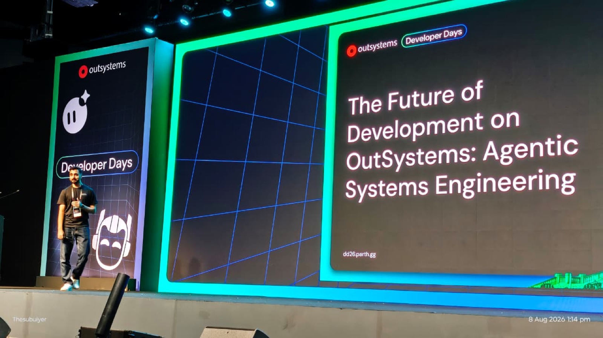
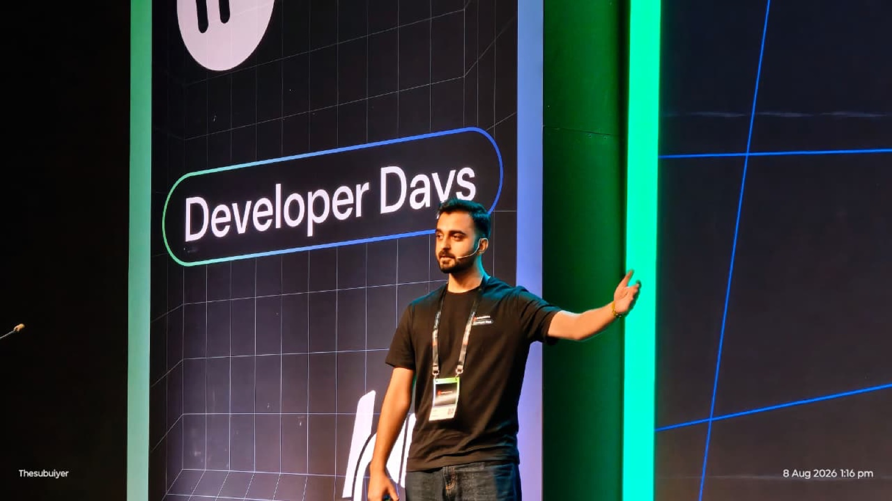
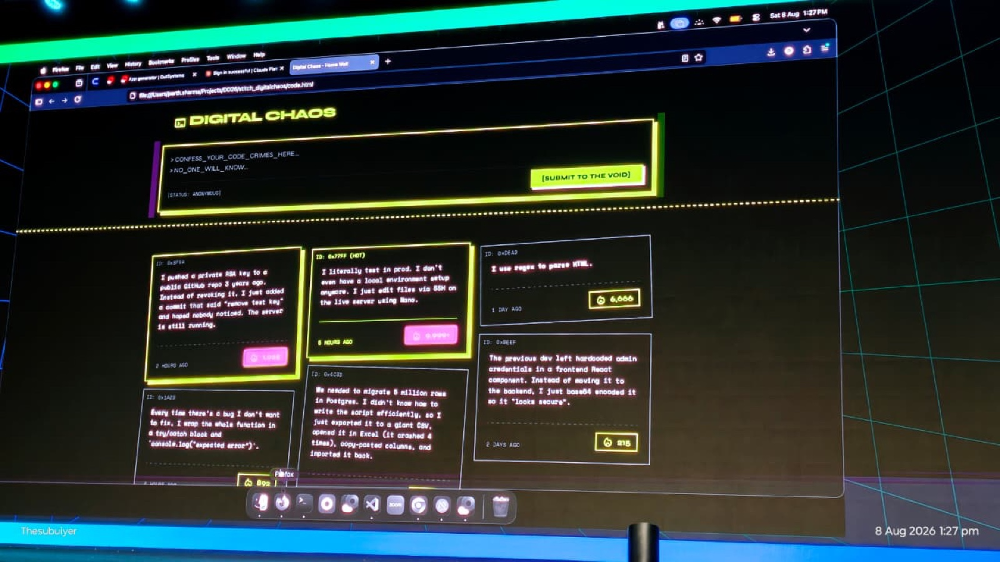
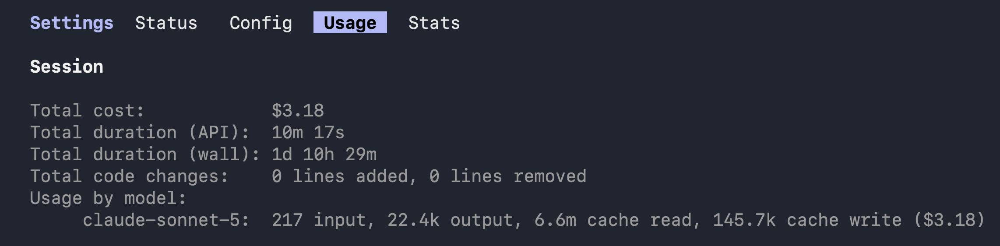
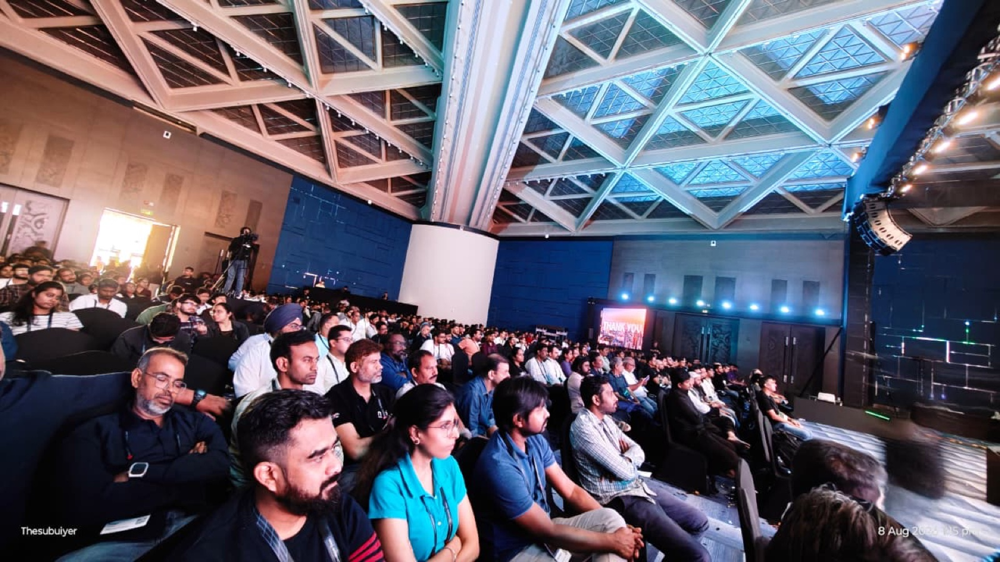

The write-up
I built a real app live on stage. Then Murphy's Law showed up anyway.

Short version: I stood on stage at Developer Days Bengaluru and turned a text prompt into a working, published OutSystems app — Digital Chaos, an anonymous "confess your code crimes" wall — using nothing but a prompt, an AI design tool, and an AI coding harness talking to OutSystems over MCP. No pre-written code. No safety net that anyone could see.
Long version: it took three attempts to get here, one of them was a genuinely funny failure, and the live run took almost twice as long as the rehearsal because of course it did. Here's how it actually went.
The pipeline
Four steps, repeated on a loop until it stopped being scary:
Prompt → AI design tool (Stitch) → AI harness (Claude Code + a custom OutSystems skill) → live OutSystems app.


The design tool turns a one-paragraph idea into a styled HTML mockup. The harness reads that mockup, drives OutSystems' Mentor agent over MCP to actually build entities, screens, and logic, and publishes it. The point I wanted to make on stage: none of this is one magic vendor-locked box — swap the design tool, swap the harness, the pipeline still works. That's the whole "Agentic Systems Engineering" pitch.
Attempt 1 and 2: the boring failures that taught me everything
Before Digital Chaos, I rehearsed the whole pipeline on a much smaller target — a single booking screen. Twice. Both times it "worked," in the sense that Mentor reported zero errors and something got published. Neither time was it actually right:
- A card grid came out as a vertical list, because the widgets were bound directly instead of through a proper Gallery + IList source.
- Buttons on screen literally said
Button1andButtonBOOK IT!— placeholder captions that never got overwritten, just appended to. - A theme that, according to the stylesheet, was fully applied. According to the actual rendered screen: nope. A CSS class existed, but nothing on the page ever had that class attached to it.
- One hard platform rejection on publish —
ModelFeature_UIPublicProperty ... has been removed— that Mentor's own validator confidently reported as "0 errors" for several turns running. The real cause only showed up in the raw deploy log, not Mentor's self-summary.
Mentor telling you "0 errors, retrying" is not the same thing as 0 errors. Always pull the raw deploy log when something smells wrong.
None of these are exotic bugs. They're the exact kind of thing that turns a confident live demo into a very long, very quiet 45 seconds on stage. So instead of hoping attempt 3 would just go better, I wrote all of it down.
The oneshot build guide
What came out of those two failed rehearsals is a single markdown file — the oneshot build guide — that gets pasted into the harness's context alongside the actual app brief, every single time. It's not clever prompting, it's just hard-won corrections turned into rules:
- Bind repeating content through
Gallery.Content → IList(Source=Aggregate.List) → widget. Never static-repeat widgets directly — that's what silently collapses a grid into a list. - Theme via real
:rootCSS variable overrides on the platform's own tokens, not invented class systems — and verify the class is actually attached to the live widget, not just present in the stylesheet. - Every button's
Captionmust be fully set, never appended to. Read every caption back before calling it done. - Any server action running a query must explicitly assign the result into its own output parameters — running the query isn't enough if nothing maps it to something the caller can read.
- Skip the Layout placeholder mechanism entirely for a single anonymous screen — it's an unconfirmed landmine on this tenant.
- If publish fails and Mentor's explanation doesn't add up, don't trust it — pull the raw deploy log yourself.
- Ask for "accessible to Everyone, no login" — never literally "role Anonymous." Said literally, Mentor will happily create an actual login Role called
Anonymous. It is not what you wanted. - Poll lean — don't drag full event-trail detail out of every status check, only when something's actually stuck.
- For anonymous "vote once" UX, a device-scoped soft lock (client-side UUID + join entity + check-before-write) is enough. It's not a security boundary, it's a fun-app boundary, and that's fine.
Applying these rules is what took the process from "broken" to "close to source, functionally correct." It's also, not coincidentally, the same list that made the difference between a live demo that's stressful to watch and one that's just... a bit boring, in the good way.
The harness has opinions, and they're not always good ones
Worth naming honestly: a chunk of those defects didn't come from Mentor being dumb. They came from the harness (Claude, in this case) giving Mentor very explicit, over-specified instructions instead of describing the outcome and getting out of the way — which nudges Mentor toward whatever literal interpretation matches those instructions, anti-patterns included. Tell an agent "make it accessible with an anonymous role" and it will go make you an actual Role entity named Anonymous, because that's a completely reasonable reading of what you typed. Tell it to fix six things in one big turn instead of trusting the platform's own smaller-batch conventions, and you get a crash mid-turn instead of six clean small ones.
None of this is a Mentor-specific failure. It's LLMs being LLMs — an agent optimizing hard for literally satisfying the instruction it was given, even when the instruction itself was the anti-pattern. The fix wasn't "use a smarter model." It was writing down, in the oneshot guide, exactly which outcomes to ask for and which literal phrasings to avoid — role Anonymous vs. "Everyone, no login," one big combined turn vs. several small ones. Once the harness stopped over-specifying, Mentor stopped following it off a cliff.
The night before: the rehearsal run
The night before D-Day, I ran the exact stage-day spec one more time, purely to time it and see what it actually cost in tokens. This is the receipt:

Ten minutes and seventeen seconds of API time, three dollars and change, to go from a written spec to a published, working app. That's the number I planned the whole stage segment around — narrate the pipeline, let the build run in the background, land the reveal a few minutes later.
Reader, the stage day run took over twenty minutes.
Murphy's Law, live, in front of an audience
Nothing was fundamentally broken — no repeat of the grid-that-became-a-list, no ghost Anonymous role. It was just slower, in the specific way that live demos are always slower than rehearsals: a combined Mentor turn that tried to push several fixes at once hit a platform-side crash (IClientAction cannot be used as the value for IUILifeCycleEvent.Destination) partway through, which meant backing off and re-running the remaining work as smaller, separate turns instead of one big one. Each of those smaller turns is safer but adds its own round-trip. Multiply that by "this is happening on a stage, in front of people, with a clock running in the back of your head," and ten minutes quietly becomes twenty-plus.
The honest lesson isn't "rehearse harder." It's: rehearse to know your real number, then build your talk track assuming reality adds 2x on top of it anyway. If your rehearsal says ten minutes, plan like it's twenty. Ours did, and it was fine — because the plan already accounted for narrating through the wait instead of standing there watching a spinner.
And this is exactly why Digital Chaos itself — the actual pre-hardened, previously-built app that the live build was reproducing — existed as the real fallback the whole time. The live build was real, attempted for real, on the actual tenant, over the actual MCP connection. But the segment's success was never allowed to depend on it finishing inside its rehearsed window. That's the difference between a demo and a bet.
What Digital Chaos actually is
An anonymous, single-page confession wall for developers at a conference. Type a short confession, hit "submit to the void," watch it appear at the top of a card wall. Every card has a 🔥 upvote that increments a count and marks itself as "already fired" for your session — soft-locked per device, not per login, because there is no login. Dark, brutalist, neon-lime-on-near-black, hard 2px borders, near-zero border radius. It is, structurally, one entity and a handful of screen actions. That's the point — small enough to build in one sitting, real enough that "it's just a toy demo" doesn't quite land once you see it running.

Update —
The oneshot guide grew up: introducing Fulcrum
The nine rules above were enough to get one screen safely through a stage demo. They were not enough for the longer, unattended, many-step builds that came after the talk — the kind where nobody is standing there to notice a Mentor turn quietly go sideways at step 23 of 47. That gap is what turned into Fulcrum, a harness-agnostic skill set for driving OutSystems ODC Mentor through long, largely unattended build sessions with real guardrails.
Fulcrum isn't the oneshot guide reskinned — it's what the same hard-won-defect approach looks like once you generalize it past a single stage demo. A few of its underlying convictions will look familiar if you read the rules above:
- Platform "success" signals lie in both directions. Zero validation errors and a clean publish are perfectly compatible with blank rows, empty repeaters, unrendered icons, corrupted content. This is the same lesson as "Mentor's 0 errors isn't proof," generalized into a whole verification skill instead of a one-off rule.
- Every rule states its own failure mode. Measured finding, in Fulcrum's own words: prompts that explained why a construct fails stopped the failure from recurring; prompts that just said "don't" did not. That's exactly why the oneshot guide above spells out root causes instead of just banning things.
- Tenant facts get probed once, not hardcoded. Things like which UI blocks exist, icon fonts, and backend quirks vary per tenant — so Fulcrum probes them into a `tenant-profile.md` during init instead of assuming this tenant behaves like the last one.
- Turn granularity is a first-class concern. The exact "one big combined turn crashed, three smaller turns didn't" lesson from stage day shows up in Fulcrum as its own skill governing turn decomposition, prompt shape, and staleness guards before mutations.
To be precise about where Fulcrum's rules actually came from, since the repo's own README currently overstates it: it isn't derived from one clean production build. It's the accumulated residue of several zero-shot, one-shot, multi-shot, and long-running app builds — including this stage build and its oneshot guide — plus the error logs and build logs from other, separate builds along the way. That correction is going into the README directly; consider it corrected here too.
If you're doing anything longer or more unattended than a single stage screen with OutSystems' Mentor, Fulcrum is the version of "write down the hard-won corrections" built for that scale — and it's harness-agnostic on purpose, same as the point I made on stage: swap the harness, swap the design tool, the discipline still holds.
Built live, mistakes and all. — Parth Sharma, OutSystems.
Photos: thanks to Subu for shooting the whole thing.